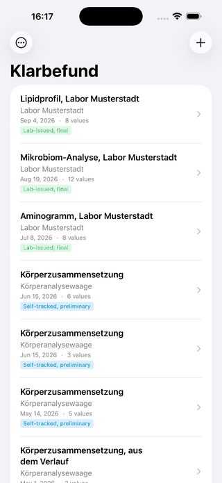
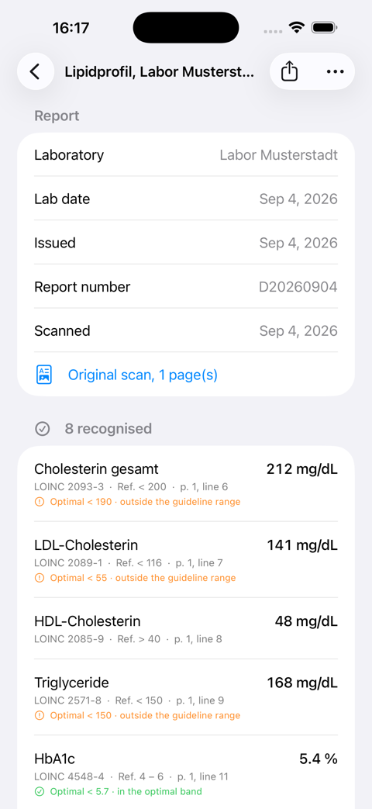
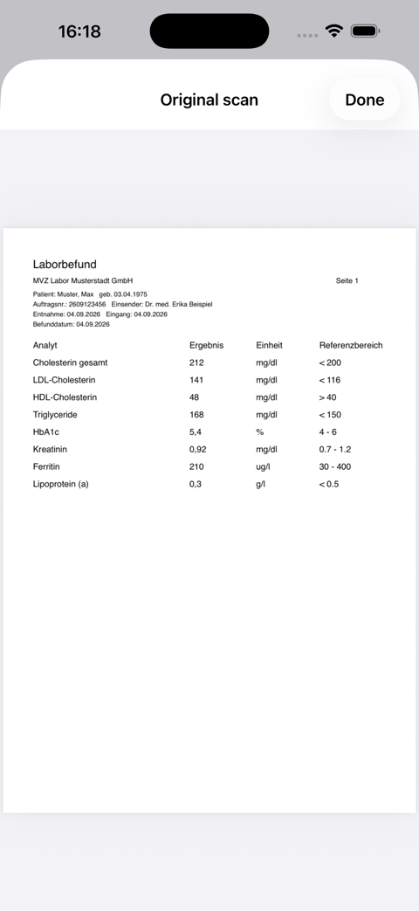
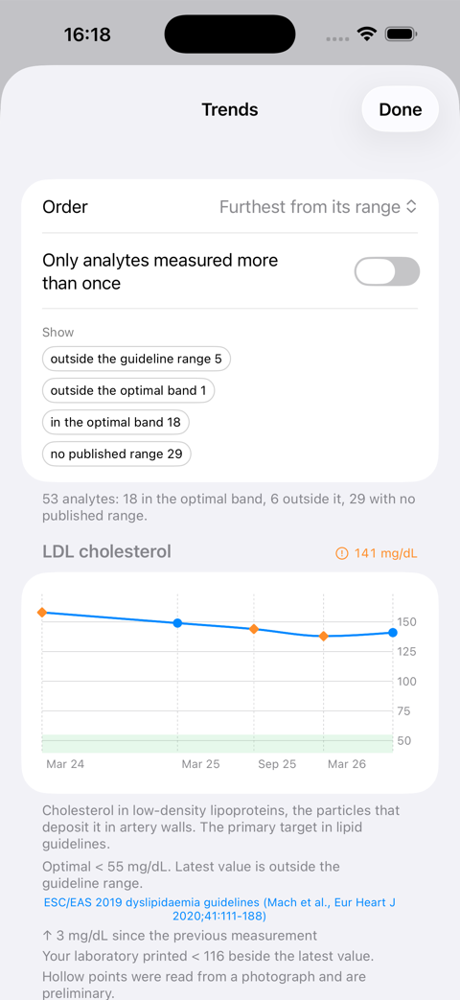
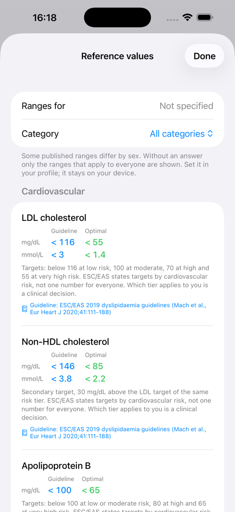
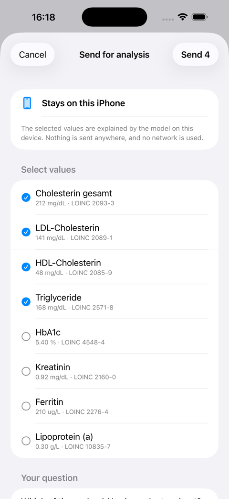
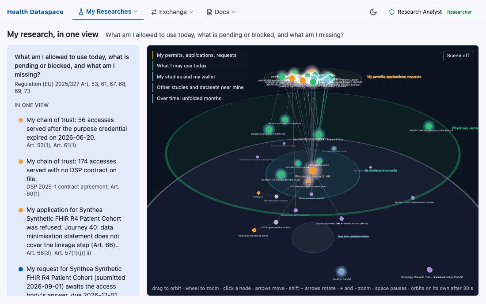
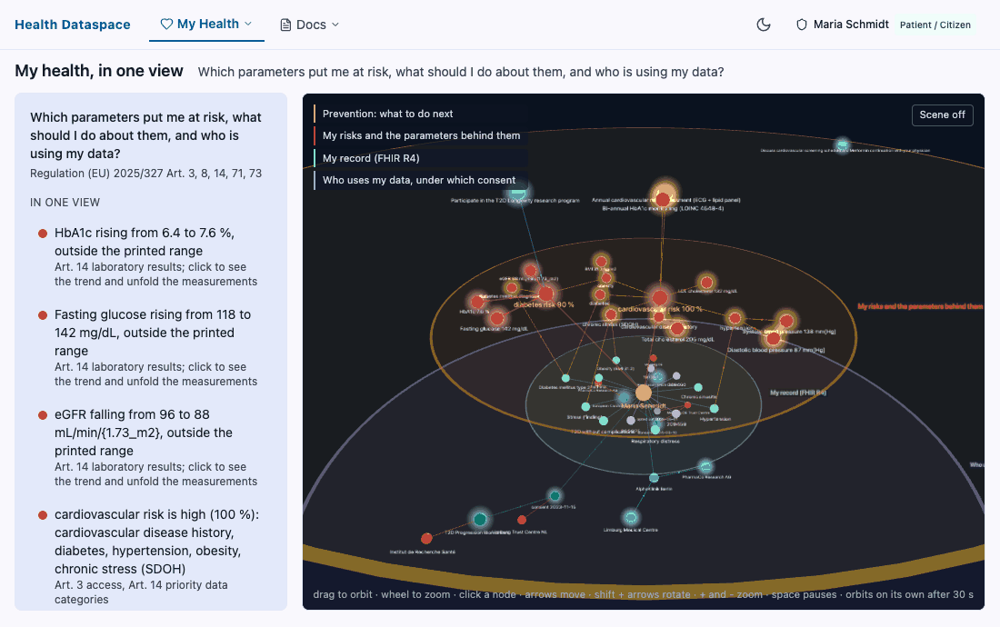
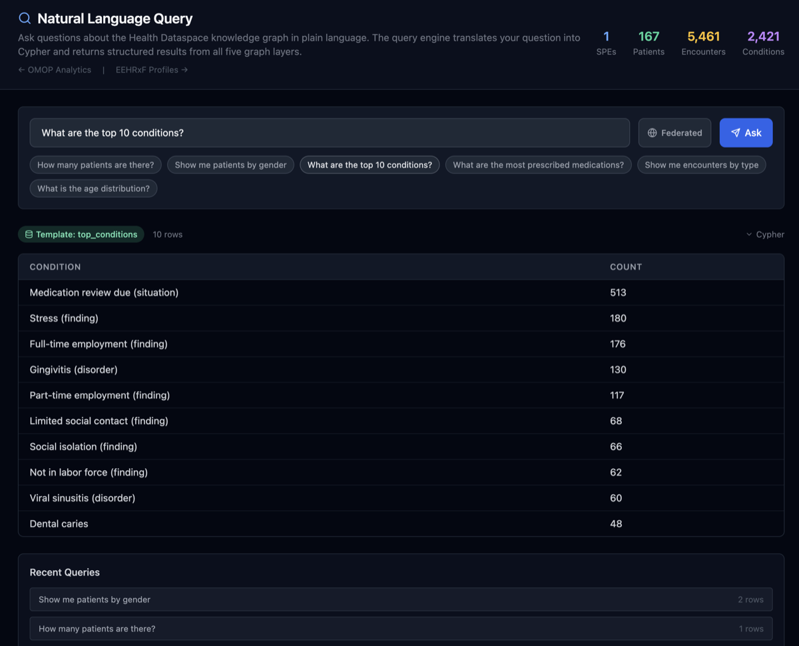
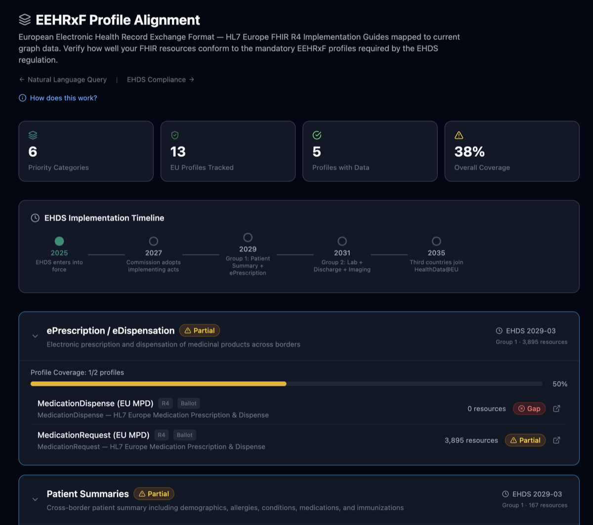

HL7 AI Challenge 2026 · Open Solution Award
The EHDS Demo & Integration Platform: primary use for the person, secondary use for the researcher, one standards stack underneath.
Matthias Buchhorn, Berlin · ehds.mabu.red · github.com/ma3u
HL7 AI Challenge Winners Showcase · World Standards Day, 14 October 2026, 11:00 EDT · press S for speaker notes, F for full screen
The problem
The person's own data, their record, their doctor. A study or a specialist lab hands over results on paper or as a PDF. Nothing pushes them into the national patient record: only the provider who ordered a test may write it, and a cohort study is not treatment.
So the citizen is the only integration point that exists today.
A researcher works under a data permit from a Health Data Access Body, with a citizen opt-out. Not consent. They need to find datasets across institutions, get the permit, agree terms with the holder, and analyse in a secure environment.
Every step needs the data to mean the same thing at both ends.
Primary use

An iPhone app. Point the camera at the sheet, or import the laboratory's PDF. The table is read on the device, every value is coded, and the report is kept encrypted with its pages.
Nothing leaves the phone unless the person sends it. No account, no network needed.
Every screen here shows an invented laboratory and invented values. The full walkthrough is in the repository under docs/klarbefund.
Primary use


Lp(a) in mg/dL and in nmol/L are different measurements with different codes. The label never decides alone.
Verbatim, never normalised. A reference range is assay-specific.
Where on the paper the number came from, so a clinician can verify rather than trust.
Lines that matched no analyte and lines that could not be read are listed, never dropped.
Primary use · in a study


One chart per measurement in one unit, across every report. A filled point came from a laboratory's document, a hollow one from a photograph.
The band is the guideline's where one names a threshold, and the laboratory's printed range everywhere else, named as such.
Every published range carries its source and a link. No source, no range. And no screen says normal, abnormal, or what to do.
Primary use · what leaves the phone
| Observation element | What it carries |
|---|---|
| code | LOINC coding, or text only with a data-absent-reason saying why LOINC has no term |
| valueQuantity | the value in its UCUM unit; the comparator as printed |
| referenceRange | the range the laboratory printed, unchanged |
| status | final for a laboratory's own text, preliminary for anything transcribed |
| extension | source kind, source line, page and box on the page, OCR confidence |
| component | for a stool report, the organism as an NCBI Taxonomy entry under LOINC 41852-5 |
Plus a DiagnosticReport, a DocumentReference for the paper, and a Provenance. Exports: PDF with pages for the doctor and the patient record, OMOP CDM tables for research, a full GDPR handover archive.

One dictionary, two devices
analytes, 1,105 label-and-unit codings, one TypeScript source
published ranges across 75 analytes, each quoting a named source
gut organisms named by NCBI Taxonomy id, verified against NCBI
golden FHIR bundle that both writers, Swift and TypeScript, must reproduce
Secondary use

Secondary use · the citizen's side

A profile derived from the person's own FHIR record, with their GDPR rights stated on the page.
Research programmes with a consent that can be revoked at any time, and the opt-out that Chapter IV actually runs on.
Aggregate findings that came back from the secure processing environment, k of five or more, never a row.
Secondary use


A five-layer knowledge graph: dataspace, catalogue, FHIR R4, OMOP CDM, terminology. 127 synthetic patients, more than 5,300 nodes, every clinical node bound to SNOMED CT, LOINC, ICD-10 or RxNorm.
The model answers only from what the graph holds, and the graph holds what FHIR delivered. No code, no answer.
One stack
| Standard | Primary use, the person | Secondary use, the researcher |
|---|---|---|
| HL7 FHIR R4 | Observation, DiagnosticReport, Provenance from paper | Patient, Condition, Observation, Medication as graph layer 3 |
| LOINC + UCUM | every value coded by label and unit, on the device | the same codes bind the terminology layer |
| HL7 Europe EEHRxF | the direction for a citizen-uploaded laboratory result | profile alignment and gap analysis against priority categories |
| OMOP CDM 5.4 | measurement, person, observation_period from the phone | the analytics layer, FHIR to OMOP transform |
| HealthDCAT-AP 2.1 | dataset discovery across holders | |
| DSP 2025-1, DCP 1.0, ODRL 2.2 | negotiation, transfer, credentials, policy | |
| NCBI Taxonomy | the organism where LOINC names only the test | carried through as a component |
What we found
The same label in two units is two measurements. Trusting the label alone put wrong codes on real values until the rule was made absolute.
Both LOINC codes for RDW-SD are deprecated, so the value is carried unmatched rather than mis-coded. A wrong code is worse than no code.
A stool report's 57 taxa have no LOINC term and never will. NCBI Taxonomy names them; the abundance stays a text code with the reason attached.
It travels verbatim into referenceRange. Normalising it, or replacing it with a published band, destroys information a clinician needs.
Final versus preliminary, and the page and line, decided by the document and not its file extension. Marking a transcription final is the failure that matters.
The app says what a test measures, with a source. It never says what a person's value means. That line is the difference between an app and a medical device.
What we need from the FHIR community
Live demo
Sign in as researcher on the live platform.
Discover datasets Negotiate OMOP analytics Ask in plain languageSign in as patient1, or pick up the phone.
Health profile Research programmes What came back Klarbefund, screen by screenNo network on the day? The static demo at ma3u.github.io/MinimumViableHealthDataspacev2 runs the same screens on fixtures, and the recordings in this deck were made there.
See it, run it, contribute
ehds.mabu.red
seven demo personas, synthetic data
github.com/ma3u/MinimumViableHealthDataspacev2
Apache 2.0, ADRs, runbooks, the app guide
iPhone, TestFlight internal testing
English and German
Matthias Buchhorn · linkedin.com/in/mbuchhorn · Thank you, HL7.